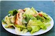
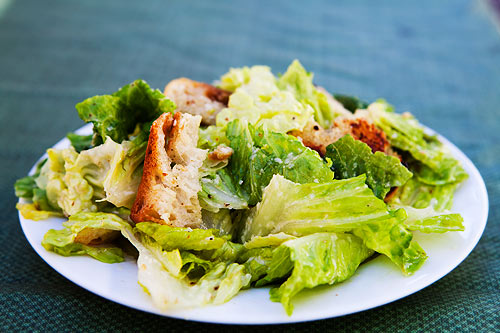
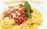
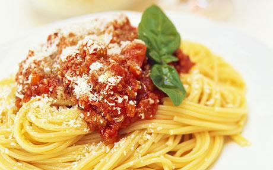
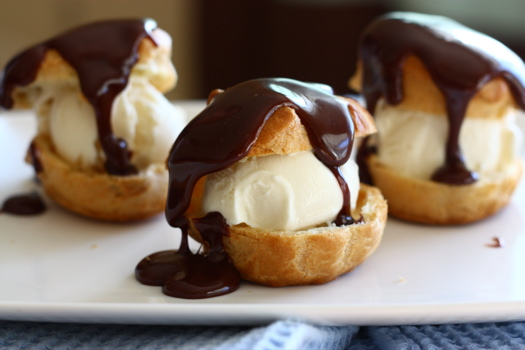

<!DOCTYPE html>
<html>
  <head>
    <meta charset="utf-8">
    <meta name="viewport" content="initial-scale=1, maximum-scale=1, user-scalable=no, width=device-width">
    <title></title>
 
    <link href="lib/ionic/css/ionic.css" rel="stylesheet">
    <script src="lib/ionic/js/ionic.bundle.js"></script>
	
    <script type="text/javascript">
		angular.module('tabsapp', ["ionic"])
        
        .config(function($stateProvider, $urlRouterProvider) {
          $stateProvider

          .state('tab', {
            url: '/tab',
            abstract: true,
            templateUrl: "tabs.html"
          })

          .state('tab.starter', {
            url: '/starter',
            views: {
              'starter': {
                templateUrl: 'starter.html',
                controller: 'starterCtrl'
              }
            }
          })

          .state('tab.maincourse', {
            url: '/maincourse',
            views: {
              'maincourse': {
                templateUrl: 'maincourse.html',
                controller: 'maincourseCtrl'
              }
            }
          })

          .state('tab.dessert', {
            url: '/dessert',
            views: {
              'dessert': {
                templateUrl: 'dessert.html',
                controller: 'dessertCtrl'
              }
            }
          });

          $urlRouterProvider.otherwise('/tab/starter');

        })
        
        
        .controller('starterCtrl', function($scope) {
          $scope.myvalue = 10;
        })
        
        .controller('maincourseCtrl', function($scope) {
          $scope.options = ["Like", "Dislike", "No opinion"];
        })
        
        .controller('dessertCtrl', function($scope) {
          $scope.checks = [{text: "Like", value: "true"}];
        })
        
        ;
	</script>
 
  </head>
  <body ng-app="tabsapp">
 
	<ion-nav-view>
	</ion-nav-view>
 
    <script type="text/ng-template" id="tabs.html">
      <ion-tabs>
        <ion-tab title="Starters" href="#/tab/starter">
          <ion-nav-view name="starter">
          </ion-nav-view>
        </ion-tab>
 
        <ion-tab title="Main Courses" href="#/tab/maincourse">
          <ion-nav-view name="maincourse">
          </ion-nav-view>
        </ion-tab>
 
        <ion-tab title="Desserts" href="#/tab/dessert">
          <ion-nav-view name="dessert">
          </ion-nav-view>
        </ion-tab>
      </ion-tabs>
    </script>
 
    <script type="text/ng-template" id="starter.html">
      <ion-view>
        <div class="list card">

          <div class="item item-avatar">
            
            <h2>Caesar Salad</h2>
            <p>Category: Starter</p>
          </div>

                <div class="item item-body">
            
            <p>
              A Caesar salad is a salad of romaine lettuce and croutons dressed with parmesan cheese, lemon juice, olive oil, egg, Worcestershire sauce, garlic, and black pepper.
    The salad's creation is generally attributed to restaurateur Caesar Cardini, an Italian immigrant who operated restaurants in Mexico and the United States.
            </p>
            <p>
              <a href="#" class="subdued">3 Likes</a>
              <a href="#" class="subdued">2 Comments</a>
            </p>
          </div>

          <div class="item tabs tabs-secondary tabs-icon-left">
            <a class="tab-item" href="#">
              <i class="icon ion-thumbsup"></i>
              Like
            </a>
            <a class="button button-positive" href="#">
              170
            </a>
            <a class="tab-item" href="#">
              <i class="icon ion-chatbox"></i>
              Comment
            </a>
          </div>

        </div>

      </ion-view>
    </script>
 
    <script type="text/ng-template" id="maincourse.html">
      <ion-view>
         <div class="list card">

          <div class="item item-avatar">
            
            <h2>Spaghetti Bolognese</h2>
            <p>Category: Main Courses</p>
          </div>

                <div class="item item-body">
            
            <p>
              Bolognese sauce, known in Italian as ragù alla bolognese, is a meat-based sauce originating from Bologna, Italy. In Italian cuisine, it is customarily used to dress "tagliatelle al ragù" and to prepare "lasagne alla bolognese".
            </p>
            <p>
              <a href="#" class="subdued">2 Likes</a>
              <a href="#" class="subdued">1 Comment</a>
            </p>
          </div>

          <div class="item tabs tabs-secondary tabs-icon-left">
            <a class="tab-item" href="#">
              <i class="icon ion-thumbsup"></i>
              Like
            </a>
            <a class="button button-positive" href="#">
              540
            </a>
            <a class="tab-item" href="#">
              <i class="icon ion-chatbox"></i>
              Comment
            </a>
          </div>

        </div>
      </ion-view>
    </script>
 
    <script type="text/ng-template" id="dessert.html">
      <ion-view>
                <div class="list card">

          <div class="item item-avatar">
            
            <h2>Profiteroles</h2>
            <p>Category: Desserts</p>
          </div>

                <div class="item item-body">
            
            <p>
              A profiterole, cream puff (US), or choux à la crème is a French dessert choux pastry ball filled with whipped cream, pastry cream, custard, or (particularly in the US) ice cream. The puffs may be decorated or left plain or garnished with chocolate sauce, caramel, or a dusting of powdered sugar.
            </p>
            <p>
              <a href="#" class="subdued">3 Comments</a>
            </p>
          </div>

          <div class="item tabs tabs-secondary tabs-icon-left">
            <ion-checkbox ng-repeat="check in checks" ng-model="check.value">{{ check.text }}</ion-checkbox> 
            <a class="button button-positive" href="#">
              440
            </a>
            <a class="tab-item" href="#">
              <i class="icon ion-chatbox"></i>
              Comment
            </a>
          </div>

        </div>
      </ion-view>
    </script>  
      
      
  </body>
</html>